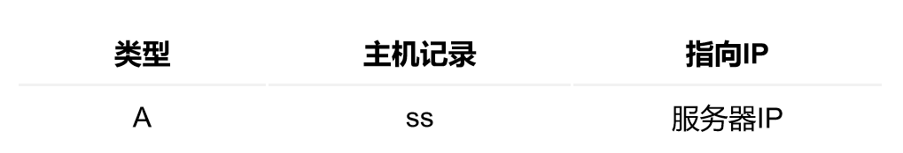
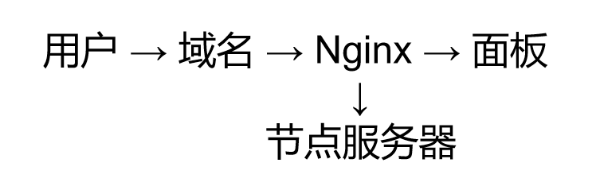

🕓2026年04月18日
视频教程：▶
在前两期中，我们已经完成了：
这一期，我们正式进入进阶优化阶段：
🎯 实现：域名访问 + HTTPS 加密 + Nginx 反向代理隐藏面板
一、为什么 3X-UI 一定要加域名 + HTTPS？
很多人会问：
❓ Reality 已经很安全了，还需要域名吗？
答案是：需要，而且很重要。
原因分析：
如果你直接使用：IP + 端口（例如：1.2.3.4:54321）
那么你的服务是：
加上域名 + HTTPS 后
你的访问会变成：https://yourdomain.com
优势：
二、域名解析配置（A记录）
在你的域名服务商（如 Cloudflare / 阿里云 / 腾讯云）中添加：

示例：
s.lu666.top → 1.2.3.4
三、安装 Nginx（反代核心）
Nginx 是整个架构的关键组件，用于做“反向代理”。
安装命令
复制 apt install nginx -y
启动服务：
复制 systemctl start nginx
验证是否成功
浏览器访问：
http://你的服务器IP
看到：Welcome to nginx! ，
说明安装成功 ✅
四、申请 HTTPS 证书（Let's Encrypt）
推荐使用免费证书：
Let's Encrypt
安装：
复制 apt install certbot python3-certbot-nginx -y
申请证书：
复制 certbot --nginx -d panel.yourdomain.com
按提示输入邮箱；
同意协议，即可完成。
五、Nginx 反向代理配置（核心步骤）
反代的本质：
👉 用户访问域名 → Nginx → 转发到 3X-UI 面板端口
1、创建文件:
复制 nano /etc/nginx/conf.d/3xui.conf
2、标准配置示例：
复制
server {
listen 80;
server_name panel.yourdomain.com;
return 301 https://$host$request_uri;
}
server {
listen 443 ssl;
server_name panel.yourdomain.com;
ssl_certificate /etc/letsencrypt/live/panel.yourdomain.com/fullchain.pem;
ssl_certificate_key /etc/letsencrypt/live/panel.yourdomain.com/privkey.pem;
location / {
proxy_pass http://127.0.0.1:54321;
proxy_set_header Host $host;
proxy_set_header X-Real-IP $remote_addr;
proxy_set_header X-Forwarded-For $proxy_add_x_forwarded_for;
proxy_set_header Upgrade $http_upgrade;
proxy_set_header Connection "upgrade";
}
}
3、测试
复制 nginx -t
4、修改完成后重启
复制 systemctl restart nginx
👉 如果你不想一集一集慢慢搭，我在会员频道内容里已经整理好：
适合想一步到位的人。
六、3X-UI 面板路径配置详解（避坑重点）
方式一：根路径（强烈推荐）
访问：https://panel.yourdomain.com/
优点：
方式二：随机路径（隐藏面板）
例如：
/nlPx9geBcBRDO14gXT/
访问：
https://panel.yourdomain.com/nlPx9geBcBRDO14gXT/
风险点
七、常见问题（100%会遇到）
Q1：打开还是 Nginx 默认页？
原因：默认站点未关闭
解决：
复制
rm /etc/nginx/sites-enabled/default
systemctl reload nginx
Q2：反代后打不开？
检查：
Q3：HTTPS 不生效
检查：
八、推荐的 3X-UI 正确架构（进阶）
这一期只是基础优化，真正推荐结构是：

👉 核心思想
九、总结（重点回顾）
本期你完成了：
下一步，如果你想进一步提升：
后面我会继续把这一套，做成完整的“从0到稳定方案”。
如果你觉得这篇对你有帮助，可以收藏一下。